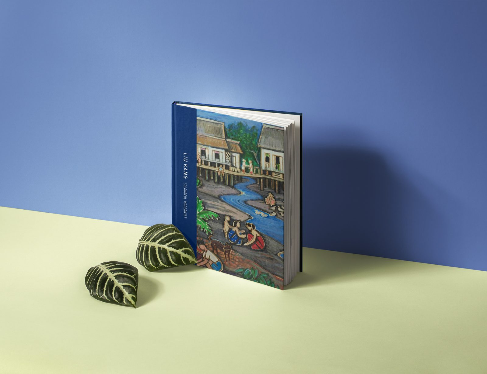
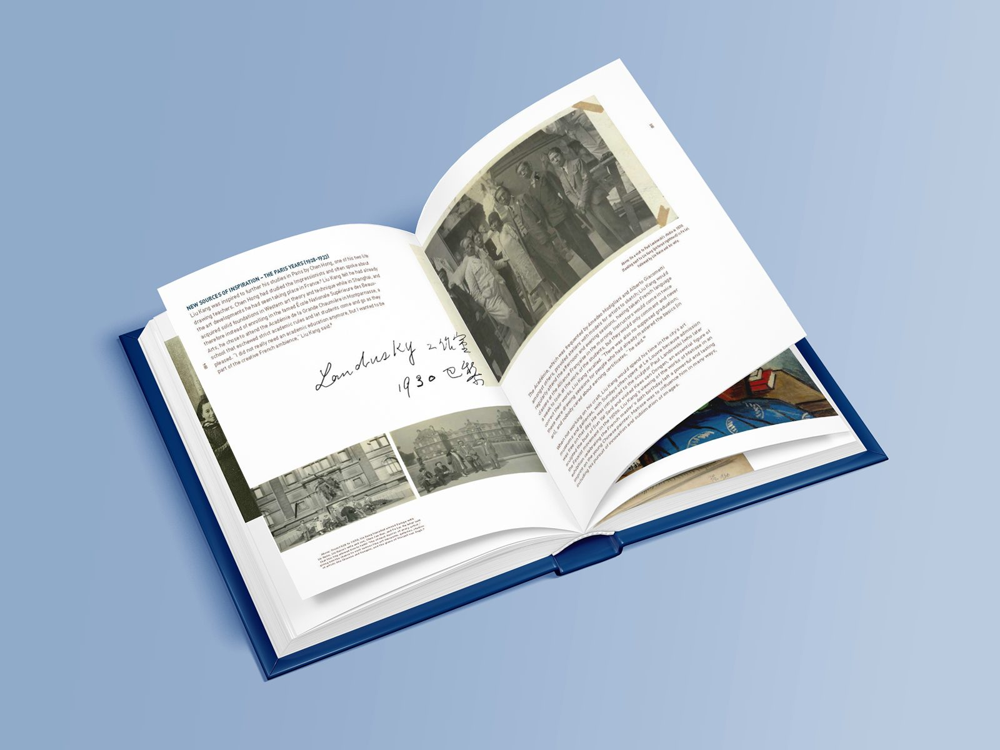
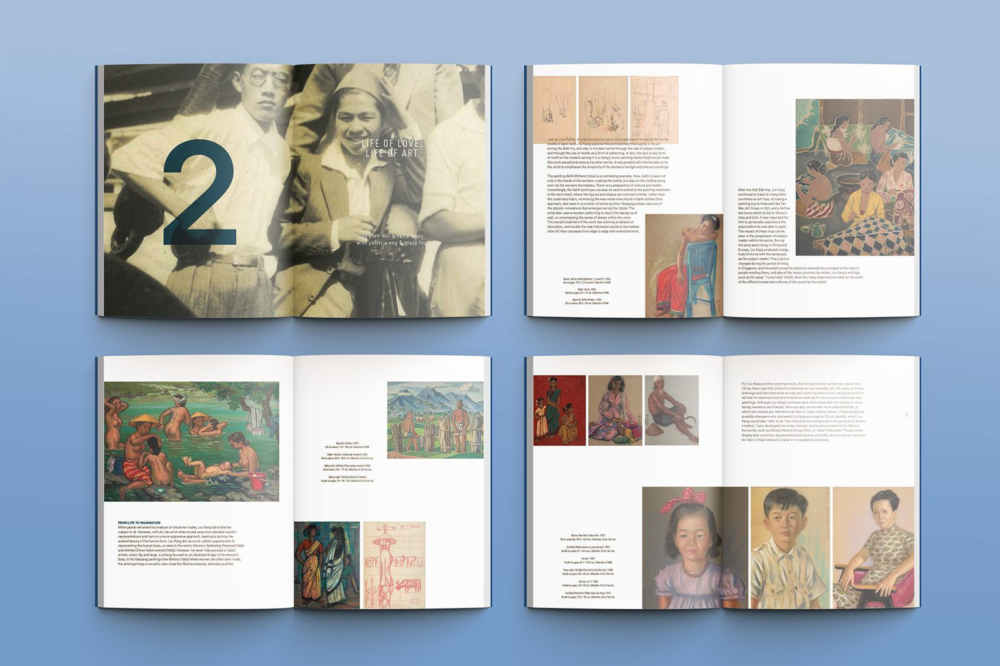

The brief
Part of the Asian Artist book series commissioned by the National Art Gallery of Singapore, the book covers the life and artistic development of Liu Kang, one of the founders of Singaporean modern art, with essays on his development of Nanyang art, where East meets West.
The idea
For an academic book, a layout as spirited as the artist's own work: essays, quotes and paintings woven together across the pages, like a road map of the cultures in his art.


